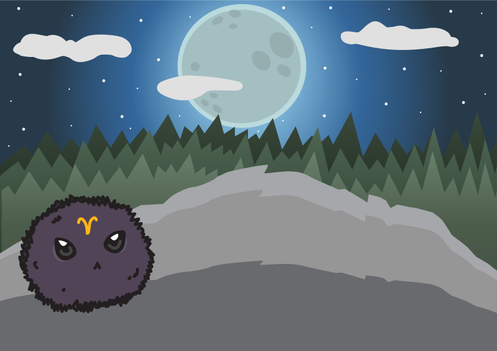
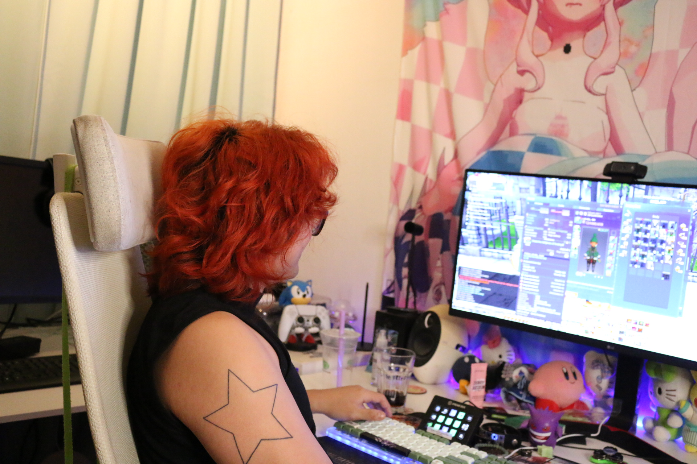

Portfolio
Links til alle opgaver lavet på 1. semester!
02.01.02 - website (Tema 2)

Dette site skulle vi lave i sammenhæng med studiestartsprøven, og var den første store opgave vi
skulle
lave. Vi fik udleveret et wireframe og et layoutdiagram, og så skulle vi bygge et site
op derfra. Et computer-site som fortalte om computere og deres komponenter, samt éns egen
computer. Opsætningen var allerede blevet bestemt. Det eneste vi selv måtte bestemme var
stylingen.
03.04.01 - præsentation (Tema 3)

Dette er præsentationen, som jeg lavede i sammenhæng med hovedopgaven i tema 3.
Her skulle vi lave en
præsentation af vores site, som vi skulle vise for en lille gruppe mennesker. Men grundet min
autisme-diagnose og præstationsangst fik jeg det ikke gjort. Dog viste jeg præsentationen til en
underviser, som godkendte den.
Eller klik her for at se sitet bag præsentationen
03.04.02 - dokumentation (Tema 3)

Dette er procesdokumentet, som jeg lavede i sammenhæng med hovedopgaven på tema 3.
Her skulle vi dokumentere alt vores research, samt resultater fra tests og andet.
Eller klik her for at se resultatet af min research
04.04.01 - temaopgave (Tema 4)

I denne opgave skulle vi lave et simpelt spil ved hjælp af CSS-animation og JavaScript. Vi blev
introduceret til CSS-animation, samt JavaScript og hvordan det kunne bidrage til CSS'en i fht. at
lave et forholdsvis funktionelt spil.
Men...
Det her viste sig at være den opgave som jeg havde
allersværest ved, fordi jeg nåede faktisk ikke at blive færdig med den i tide, da jeg løb ind i
nogle problemer med min JavScript-kode. Vi skulle have haft omskrevet hele koden til konstanter,
og det fik jeg ikke gjordt.
Så jeg fik ikke mit spil lavet færdigt, hvilket jeg er sindssyg ærgelig
over, fordi jeg havde brugt så lang tid på at lave alle elementerne og havde glædet mig til at se
dem i aktion. Selve websitet er heller ikke færdigt, fordi at jeg smed så mange kræfter efter
spillet, at jeg rent faktisk ikke nåede det. Så hverken spillet eller sitet er færdigt, og der
mangler også nogle billeder.

Men i kan stadig få lov til at se hvordan det ser ud ved klikke her eller på billedet.
05.01.01 - videosite (Tema 5)

I den første opgave i tema 5 skulle vi interviewe en person med en passion. Her skulle vi ud i par og
optage et interview, hvorefter vi skulle redigere det video vi havde fået, for så at putte det
færdige produkt op på et site som vi skulle lave.
Mig og min studiekammerat var ude interviewe hendes kammerat som har en kæmpe-passion inden
for et spil der hedder Final Fantasy 14. Han har godt og vel lidt over 3000 timer i det, så vi synes
begge
at det var ret oplagt at interviewe ham.

Klik på det øverste billede eller klik her for at komme til sitet
05.02.01 - virksomhedssite (tema 5)

Anden opgave i tema 5 bestod af at redesigne en virksomheds hjemmeside. Min gruppe valgte
Mellemamerika Komitéen (MAK), da én af gruppmedlemmerne er frivillig der.
Her skulle vi lave research på MAK's nuværende hjemmeside og vurdere hvad der kunne laves bedre. Og
så ud fra yderligere research, samt
planlægning lave en forbederet udgave af siden med det vi havde fundet frem til.

Klik på det øverste billede eller klik her for at komme til sitet